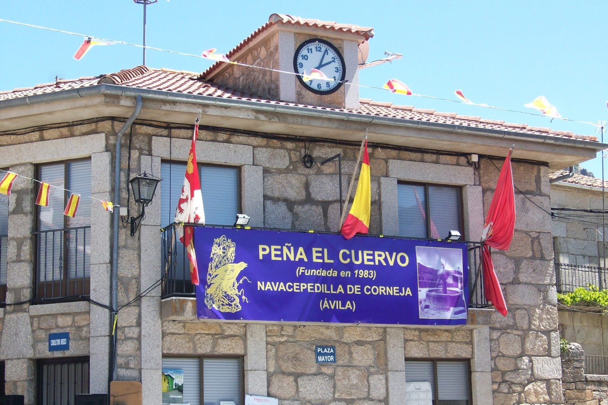

En Navacepedilla de Corneja, un pueblo pequeño pero con gran sentimiento en plena sierra de Ávila, nació en 1983 la Peña El Cuervo. Lo que empezó como un grupo de amigos con ganas de pasarlo bien y hacer cosas juntos, se ha convertido con los años en parte esencial del alma del pueblo.
La Peña surgió de las ganas de juntarse, de compartir fiestas, risas y buenos ratos. Desde el principio, el objetivo fue claro: crear un espacio para convivir, reforzar la amistad entre vecinos y mantener vivo el espíritu de comunidad. Y vaya si se consiguió.
Con el paso del tiempo, nuestra Peña ha estado presente en prácticamente todos los momentos importantes del pueblo. Hemos montado fiestas inolvidables, organizado actividades para todas las edades, colaborado en tradiciones y, sobre todo, creado recuerdos que nos acompañarán toda la vida.
Gracias al esfuerzo y la ilusión de sus socios, la Peña ha conseguido que las fiestas de Navacepedilla sean conocidas en todo el Valle del Corneja. No hay verano sin su música, ni sin esos ratos que parecen eternos en la plaza.
Hoy, más de 40 años después, seguimos con las mismas ganas o más de pasarlo bien, de unir a la gente y de seguir haciendo historia juntos. Porque la Peña El Cuervo no es solo para las fiestas, es una forma de sentir el pueblo, de estar juntos y de celebrar lo que somos.
Y si algo tenemos claro, es que Navacepedilla no sería lo mismo sin la Peña El Cuervo